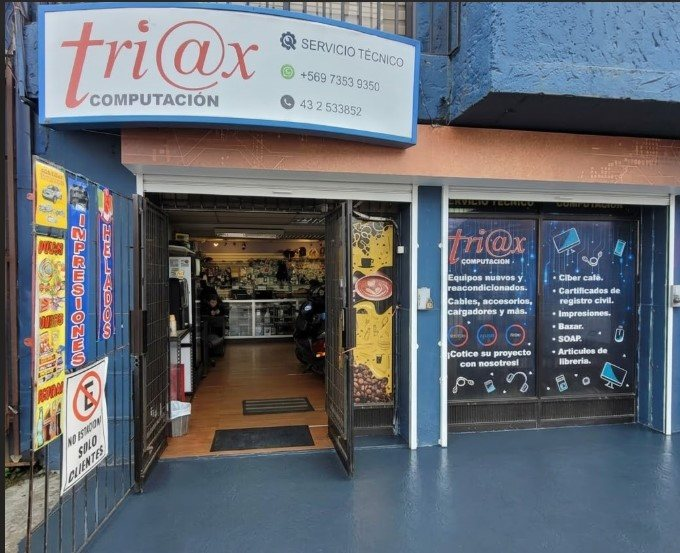

Servicio técnico Nuestro fuerte
Reparación y mantención de PC y notebooks de todas las marcas: formateo, limpieza, cambio de piezas, recuperación de datos y mejoras de rendimiento.
* no atendemos monitores ni impresoras
// el decano de la computación en los ángeles · desde 1998
Fuimos una de las primeras tiendas de computación de la ciudad y somos la única de esa generación que sigue vigente. Más de 25 años de diagnóstico honesto, presupuesto claro y equipos reacondicionados con garantía de verdad.
// qué hacemos
Un local de barrio con todo a la mano: servicio técnico, equipos, accesorios y hasta el café mientras esperas.
Reparación y mantención de PC y notebooks de todas las marcas: formateo, limpieza, cambio de piezas, recuperación de datos y mejoras de rendimiento.
* no atendemos monitores ni impresoras
Computadores y notebooks revisados, listos para usar y con garantía. Una opción rendidora y económica, con respaldo de verdad.
Teclados, mouse, cables, almacenamiento, conectividad y los insumos que necesitas para el día a día, sin tener que pedirlos por internet.
Computadores para uso de ciber, impresiones y, mientras estás aquí, bazar, librería, golosinas, helados, bebidas y café.
Equipamos y damos soporte a empresas y pymes de la zona: equipos, insumos y servicio técnico, con boleta o factura.
Tráelo o escríbenos. Lo revisamos y te decimos qué tiene, con presupuesto claro y sin compromiso.
Consultar ahora// nuevo · sitios web para negocios
Hacemos páginas web tipo tarjeta de presentación para pymes y negocios que quieren tener presencia en internet: tu negocio, tus servicios, tu ubicación y tu WhatsApp, en una página rápida y cuidada. Nos preocupamos de que quede con SEO para que aparezcas en Google, y preparada para que las inteligencias artificiales te encuentren y te recomienden.
Esta misma página que estás viendo es nuestra carta de presentación.
Elige entre 12 modelos listos o danos una web de referencia. Ver los 12 modelos →
* hacemos páginas de presentación para pymes y negocios; no hacemos tiendas online ni sistemas para grandes empresas
precio
Desde $300.000 + IVA
$300.000 + IVA · hasta 6 cuotas con tarjeta. Online en menos de una semana.
Quiero mi página web Ver los 12 modelos Cómo funciona// cómo trabajamos
Sin letra chica y sin trabajos que no pediste. Así funciona desde 1998.
Llega con tu equipo al local o cuéntanos por WhatsApp qué le pasa. Sin hora previa, sin filas.
Hacemos el diagnóstico y encontramos la causa real del problema, no solo el síntoma.
Te explicamos en simple qué tiene y cuánto cuesta arreglarlo. Tú decides, sin compromiso.
Reparamos con repuestos de proveedores serios y te entregamos el equipo probado y andando.
// quiénes somos
Triax nació en 1998 como un pequeño local en Avenida Alemania, cuando en Los Ángeles casi no existían tiendas de computación. Fuimos pioneros del rubro en la ciudad y, de aquella primera generación, somos los únicos que seguimos con la cortina arriba. Por eso nos dicen el decano de la computación angelina.
No somos una gran cadena. Somos el técnico de confianza al que vuelves porque te tratamos bien y te explicamos las cosas en simple. Detrás de cada atención hay personas reales que quieren ayudarte a resolver, no a venderte de más.
// local real, clientes reales
Somos un local físico en pleno Los Ángeles, con clientes reales que nos recomiendan.

"Buen local, justo tenían un cargador de notebook que necesitaba con urgencia."
matzelwow · Local Guide"Muy buen trato al cliente, dando solución rápida y oportuna a mi requerimiento."
Patricio Cortés"Atención rápida y soluciones concretas a buen precio."
Rodrigo Montestrabajamos con proveedores y marcas de confianza
// por qué elegir triax
// preguntas frecuentes
Sí. Hacemos servicio técnico de computadores de escritorio y notebooks de todas las marcas. No atendemos monitores ni impresoras.
Sí. Todos nuestros equipos reacondicionados se entregan revisados y con garantía. Te explicamos el estado de cada uno antes de comprar.
Sí. Revisamos tu equipo y te entregamos un presupuesto claro antes de hacer cualquier trabajo, sin compromiso.
Sí. Atendemos a empresas y pymes de la zona con venta de equipos, insumos y servicio técnico, con boleta o factura.
Sí, hay estacionamiento gratuito justo frente a la puerta del local, en Avenida Alemania 358, Los Ángeles.
Atendemos de lunes a viernes de 9:00 a 13:00 y de 14:30 a 18:00. Sábados y domingos permanecemos cerrados.
Porque abrimos en 1998, cuando casi no existían tiendas de computación en la ciudad, y de aquella primera generación somos los únicos que seguimos atendiendo hasta hoy, con la misma familia detrás.
Sí. Hacemos páginas tipo tarjeta de presentación para pymes y negocios que quieren presencia en internet, desde $300.000 más IVA y listas en una semana, con SEO para Google y preparadas para que las IA te recomienden. Esta misma página es un ejemplo. No hacemos tiendas online ni sistemas para grandes empresas.
El diagnóstico y el presupuesto son sin costo: primero revisamos tu equipo, te decimos qué tiene y cuánto cuesta, y tú decides. El valor depende de la falla, pero nunca cobramos sin avisarte antes.
La mayoría de las reparaciones queda lista entre 24 y 72 horas, según el repuesto. Al hacer el diagnóstico te damos un plazo concreto.
Sí, hacemos recuperación de datos en muchos casos. Tráelo y evaluamos sin costo qué se puede rescatar.
Sí: notebooks y PC reacondicionados, revisados y con garantía. Te recomendamos el equipo según tu uso y presupuesto.
Somos un local comercial en Av. Alemania 358; la atención es en la tienda, con estacionamiento gratis frente a la puerta.
Sí, aceptamos efectivo, tarjetas y transferencia. Para empresas emitimos boleta o factura.
// contacto
Estamos en pleno Los Ángeles, con estacionamiento gratis frente a la puerta.
Avenida Alemania 358, Los Ángeles, Región del Biobío
Estacionamiento gratuito frente a la puerta
Lunes a viernes: 9:00 a 13:00 y 14:30 a 18:00
Sábado y domingo: cerrado